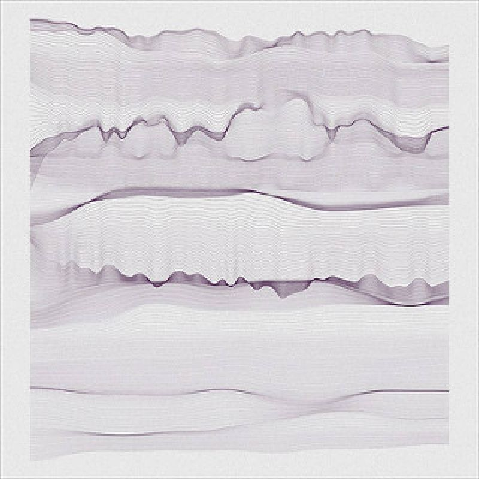

Volgens wikipedia:
- Een illusie is een schijnbare werkelijkheid of een onjuist idee van de werkelijkheid. Het beeld dat iemand van de werkelijkheid heeft is gebaseerd op diens waarnemingen via de zintuigen en verwerking van deze signalen in de hersenen. Illusies zijn dus gebaseerd op foutieve waarnemingen van reële externe prikkels. -
Volgens encyclo:
- De waarnemingsvervorming waardoor dingen anders worden waargenomen dan ze zijn. Wanneer we bijvoorbeeld in de trein zitten en een andere trein begint te rijden, lijkt het net of we zelf achteruit gaan. Ook kan de waarneming onder invloed staan van de stemming. Wanneer iemand bijvoorbeeld erg angstig is, lijkt het al gauw alsof dagelijkse geluiden in huis veroorzaakt worden door voetstappen. -
Volgens home.planet:
voor de gek houden, bespotting, beguigling, scherts
Wat is illusie volgens ons:
Een illussie is volgens ons een schijnbare werkelijkheid. Het creëren van een onjuist beeld naar de mens toe. Een soort van contrasterend effect opwekken door de mens te mis leiden. De mens een andere gedachte laten opwekken.
Afbeeldingen: Diana Lange - https://www.flickr.com/photos/dianalange/sets/72157633318701314/with/8677061375/
James Kruger de huidige creative director bij het Antwerpse designbureau Pinkeye.
De roots van James Kruger liggen in Stellenbosch, Zuid-Afrika. Op de Universiteit van Stellenbosch behaalde met grote onderscheiding zijn bachelor gra sch design en fotogra e, later haalde hij op The Brand Communication school een diploma van Strategic Brand Leadership.Toen hij emigreerde uit Zuid-Afrika heeft hij ook nog een master in Retail Design behaald op het Piet Zwart Instituut in Rotterdam. James Kruger heeft gewerkt bij verschillende designbureaus voor dat hij bij Pinkeye terecht is gekomen.Voorbeelden hiervan zijn Design is Dead, Networks BBDO, Saatchi & Saatchi en JCNKDOTDSIGN. Zijn huidige werkplaats, Pinkeye, is een jong award winnend designbureau dat zich bezig houdt met een mix van gra sche vormgeving, interieurontwerp, productdesign en service design. De focus ligt vooral op marketing en reclame, er worden creatieve en commerciële projecten opgestart en producten gemaakt zoals bijvoorbeeld logo’s, verpakkingen, commerciële ruimtes maar ook het coachen van Start Up ondernemingen .. Het bureau is al in zee gegaan met verschillende grote merken als Timberland, Komono, Coca-Cola, MAC Cosmetics, Duvel Mootgat, Douwe Egberts, Eskimo enz.
James Kruger is geboren in Zuid- Afrika in de buurt van Kaapstad en hij verbleef in hier tot zijn 26 jaar. In Zuid-Afrika heeft hij verschillende diploma’s behaald, zoals: Bachelor grafisch design en fotogra e aan de Stellenbosch University en het diploma onderscheiding in strategische brand leaderschip aan de Vega The Brand Communications School in Kaapstad. Na enkele jaren in Zuid-Afrika gewerkt te hebben belande hij in Rotterdam, hier haalde hij later nog een diploma master interieur architectuur en management behaalde aan het Piet Zwart Instituut. De studie interieur architectuur en management ging meer over hoe de dingen gingen, zoals bijvoorbeeld hoe hoog is een stoel. Het ging niet over het pure architectuur, maar ook de dingen er rond. Nadat hij af studeerde kwam hij terecht bij onder andere Saatchi & Saatchi Brussels als designer en creative director, later bij Design Is Dead als senior digital art director en op heden werkt hij bij Pink Eye als creative director. Hier werkt hij ondertussen al een maand of zes en hij vindt Pink Eye hij de lelijkste naam ooit!
Pink Eye is gecreërd om multidisciplinair te zijn en ze houden zich bezig met: - Brand en Identity designers: busy with the emotional
- Product designers: busy with the functional
- Interior designers: busy with the tangible
Multidisciplinair zijn is volgens James Kruger niet zo zeer verschillende vaardigheden combineren maar het gaat volgens hem over een andere manier van kijken naar de dingen. Een voorbeeld dat hij aanhaalde tijdens zijn voordracht was Bill Bowerman. Hij is geboren in Portland, Oregon. Bill Bowerman was een Track & Field coach en co-founder van nike. Hij trainde olympische atleten en Amerikaanse recordhouders. In 1962 reisde hij af naar Nieuw-Zeeland om daar het concept van joggen als tness routine bij de gevorderde leeftijdscategorie te gaan bekijken. Hij bracht
dit concept terug mee naar de Verenigde Staten en schreef er een boek over, Book 1966-1970’s running boom. Dit boek ging over het traag lopen, het joggen dat we kennen. Hieruit is hij ook vertrokken om het ontwikkelen van schoenen die ideaal zijn voor lange afstandslopers. In plaats van loopschoenen met spikes onderaan die gebruikt werden voor piste lopen is hij tot het idee gekomen om een sportschoen te voorzien van een wafelpatroon onderaan. Zo is uiteindelijk de populaire sportschoen of waf eshoe van nike uitgevonden.
Vervolgens heeft hij een aantal projecten van Pink Eye besproken, weliswaar niet allemaal projecten waar hij zelf mee geholpen heeft. Maar wel projecten die belangrijk waren voor het groeiende bedrijf.